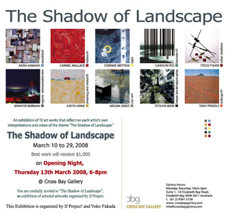
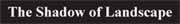
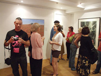

|


The theme of the exhibition is The Shadow of LandScape. Every landscape that we can see is constructed by light and shadow which are produced by light.
The landscapes that we memorise and imagine are also created by light and shadow. The light brings the shadow into the existence of the real or virtual.
Infact, the shadows of landscapes problematises the shadows of various phenomenon as a consequence of human activity.
To find out the shadows, in this meaning is to review and
recreate our living context.
We expect artists, should have viewed our social environment critically.
今回のexhibition の主題は、The Shadow of Landscape.
私たちが目にすることのできるすべてのLandscapeは、光と光がつくり出す影によって構成されている。
また私たちが記憶している、あるいは想像するLandscapeも光と影によって構成されている。光は影をつくり出す。
今回のテーマが問題化するのは人間の行為の結果としての諸現象の影である。この意味での影を発見すると言う事は現代文明にたいするcriticである。

Exihibition dates was:
10th to 29th of March 2008
location:
CROSSBAY GALLERY in Sydney
The Shadow of Landscape
selected artists:
Akira Kamada
Carmel Wallace
Jennifer Norman
Judith Anne
Corinel Brittain
Carolyn Teo
Megan Jones
Tetsuya Mori
Itzick Fisher
Tony Priddle
△top
▼previous project
|